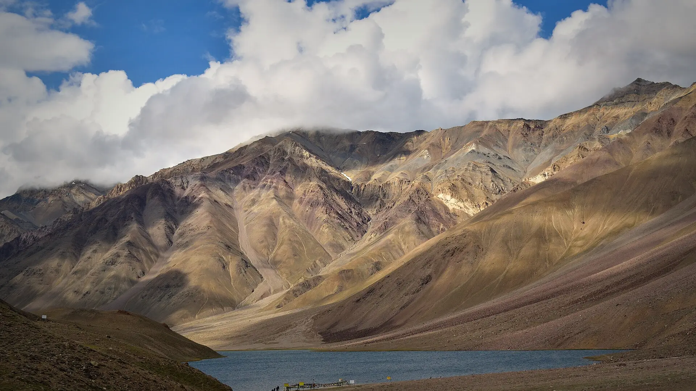

01Day 1 · Jobra · 2,743 mkm 0.1
Out of Manali
16kmFrom Manali · By road, via Prini
A 16 km drive from Manali (2,050 m) climbs through Prini to Jobra, where the walking starts.

Photo: Adarsh Patel, CC BY-SA 4.0हम्टा पास · Kullu–Lahaul, Himachal
The trek in one line, and what you can do with it.
One pass, two worlds: forest and flowers on one side, rock and dust on the other.
6 stops on the map, then the climb. Scroll the stops and the map follows.
01Day 1 · Jobra · 2,743 mkm 0.1
16kmFrom Manali · By road, via Prini
A 16 km drive from Manali (2,050 m) climbs through Prini to Jobra, where the walking starts.
01Day 1 · Chikka · 3,048 mkm 3.0
3kmToday · A short first walk
A short walk brings you to camp at Chikka, about 3,050 m, beside the river.
02Day 2 · Balu Ka Ghera · 3,600 mkm 8.0
5kmToday · Via the Jwara meadows
Up through the Jwara meadows, full of flowers in season, past waterfalls to Balu Ka Ghera at about 3,600 m, the base of the pass.
03Day 3 · Hampta Pass · 4,200 mkm 12.8
9kmToday · Over the pass to Shea Goru
The high point of the trek, Hampta Pass at about 4,200 m, between the Kullu valley and Lahaul.
03Day 3 · Shea Goru · 3,900 mkm 17.0
~50°Steep part · For about 3 km
From the pass the trail drops steeply, close to 50° for about 3 km, to camp at Shea Goru, 3,900 m.
04Day 4 · Chhatru · 3,350 mkm 21.9
5kmWalk · To the road at Chhatru
The last walk ends at Chhatru on the Chandra river. From here a drive of about 70 km reaches Chandratal, a turquoise lake at 4,250 m, and comes back.
Best in Jun–Oct.
Dark: the months the trek’s sources call its best. Mid: possible. See all treks in June.
 Photo: Adarsh Patel, CC BY-SA 4.0
Photo: Adarsh Patel, CC BY-SA 4.0
Base prices from 8 operators’ own pages, per person. GST and travel are often extra. Treqz sells nothing.
₹5,500–20,000
The practical things, then the questions people ask.
One thing from each part of the packing list, so nothing big is missed. The full list, with where to rent and the daily rates, is on the 3D page.
The full packing list →


Manali has every network. There is no signal after Sethan, the last village, and none at the campsites.
Bikat AdventuresThe last charging point is your hotel in Manali. Bring a full power bank.
Bikat AdventuresOn pass day the last fresh water is about 3 km out of Balu Ka Ghera. Fill both bottles before the climb.
Bikat AdventuresEach camp has a toilet tent over a dry pit. Water is not allowed inside, so bring toilet paper.
Bikat AdventuresAbout 22.0 km of walking over 5 days on the trail.
The highest point is 4,200 m, about 1,450 m above the start.
Its sources grade it Moderate.
Jun–Oct.
₹5,500 to ₹20,000 per person: base prices from 8 operators' own pages. GST and travel are often extra.
Manali has every network. There is no signal after Sethan, the last village, and none at the campsites.
Most fixed departures include the drive. On your own, a car from Manali to Jobra costs about ₹3,000, shared by the group. Chhatru back to Manali is about ₹9,000 for a car of five.
There are no ATMs after Manali. Use the ATMs in Manali's main market.
Thermal top and bottom, Full-sleeve T-shirts, Full-sleeve sweater, Warm jacket, Rain jacket and rain pants, Quick-dry trek pants ×2, Waterproof warm gloves, Woollen cap. The full list is on the 3D page.
Its sources do not list December to February as a trekking season.
Its sources grade it Moderate and it takes 5 days on the trail, with a highest point of 4,200 m.
Bhrigu Lake, Beas Kund, Sar Pass, Kheerganga, Pin Parvati Pass.


Treks in June · Treks in July · Treks in August · Treks in September · Treks in Himachal Pradesh · Moderate Treks in Himachal Pradesh · Monsoon Treks in India · 5 Day Treks in India · Treks in India Under ₹10,000 · Hampta Pass vs Bhrigu Lake · Hampta Pass vs Sar Pass · Hampta Pass vs Beas Kund · Hampta Pass vs Pin Parvati Pass · Free trek finder · All treks in 3D